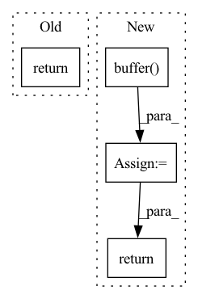

Pattern ID :7129
Before Change
int idx = get_global_id(0);
c[idx] = atan2(a[idx], b[idx]);
}, global_size=[prod(ret.shape)]).build(GPUBuffer.spec.runtime).exec([ret, a.contiguous(), b.contiguous()])
return ret
def atan2_cpu(a:CPUBuffer, b:CPUBuffer) -> CPUBuffer:
return CPUBuffer(np.arctan2(a._buf, b._buf))After Change
def atan2_gpu(ret:LazyBuffer, a:LazyBuffer, b:LazyBuffer):
assert a.device == "GPU" and b.device == "GPU", "gpu function requires GPUBuffers"
assert a.dtype == b.dtype and a.dtype == dtypes.float32, "gpu function only supports float32"
ret.realized = Device[ret.device].buffer( prod(ret.shape), ret.dtype)
ASTRunner("atan2",
__kernel void atan2(global float *c, global float *a, global float *b) {
int idx = get_global_id(0);
c[idx] = atan2(a[idx], b[idx]);
}, global_size=[prod(ret.shape)]).build(Device[ret.device].runtime).exec([ret, a, b])
return ret.realized
def atan2_cpu(ret:LazyBuffer, a:LazyBuffer, b:LazyBuffer):
return Device[ret.device].buffer(np.arctan2(a.realized._buf, b.realized._buf))In pattern: SUPERPATTERN
Frequency: 5
Non-data size: 4
Instances Fragment ID: 23785515
Project Name: geohot/tinygrad
Commit Name: f5467cfedcdde0b9758ff1b8add533bc2b9a6f83
Time: 2023-03-18
Author: 72895+geohot@users.noreply.github.com
File Name: test/test_custom_function.py
M Class Name: AnonimousClass
N Class Name: AnonimousClass
M Method Name: atan2_gpu(3)
N Method Name: atan2_gpu(2)
M Parent Class:
N Parent Class:
M File Name: test/test_custom_function.py
N File Name: test/test_custom_function.py
M Start Line: 18
M End Line: 26
N Start Line: 15
N End Line: 24
Before Change
class Ops:
def unary_op(ctx, op:UnaryOps, x, ret):
log_op(op, ret, [x])
return ctx.op.unary_op(op, x, ret)
def reduce_op(ctx, op:BinaryOps, x, ret):
log_op(op, ret, [x])After Change
from tinygrad.helpers import binary_broadcast
class Ops:
def unary_op(ctx, op:UnaryOps, x):
ret = ctx.buffer( x.shape)
ctx.op.unary_op(op, x, ret)
log_op(op, ret, [x])
return ret
def reduce_op(ctx, op:BinaryOps, x, ret):
log_op(op, ret, [x]) Fragment ID: 23785518
Project Name: geohot/tinygrad
Commit Name: bbf231da3494d3d652e1a18ff7d5d524959af2f9
Time: 2022-06-11
Author: geohot@gmail.com
File Name: tinygrad/ops.py
M Class Name: Ops
N Class Name: Ops
M Method Name: unary_op(3)
N Method Name: unary_op(4)
M Parent Class:
N Parent Class:
M File Name: tinygrad/ops.py
N File Name: tinygrad/ops.py
M Start Line: 49
M End Line: 51
N Start Line: 51
N End Line: 54
Before Change
def binary_op(ctx, op:ReduceOps, x, y, ret):
log_op(op, ret, [x, y])
return ctx.op.binary_op(op, x, y, ret)
def movement_op(ctx, op:MovementOps, x, ret, arg=None):
log_op(op, ret, [x])After Change
return ctx.op.reduce_op(op, x, ret)
def binary_op(ctx, op:ReduceOps, x, y):
ret = ctx.buffer( binary_broadcast(x.shape, y.shape))
ctx.op.binary_op(op, x, y, ret)
log_op(op, ret, [x, y])
return ret
def movement_op(ctx, op:MovementOps, x, ret, arg=None):
log_op(op, ret, [x]) Fragment ID: 23785519
Project Name: geohot/tinygrad
Commit Name: bbf231da3494d3d652e1a18ff7d5d524959af2f9
Time: 2022-06-11
Author: geohot@gmail.com
File Name: tinygrad/ops.py
M Class Name: Ops
N Class Name: Ops
M Method Name: binary_op(4)
N Method Name: binary_op(5)
M Parent Class:
N Parent Class:
M File Name: tinygrad/ops.py
N File Name: tinygrad/ops.py
M Start Line: 57
M End Line: 59
N Start Line: 61
N End Line: 64
Before Change
def movement_op(ctx, op:MovementOps, x, ret, arg=None):
log_op(op, ret, [x])
return ctx.op.movement_op(op, x, ret, arg)
def processing_op(ctx, op:ProcessingOps, x, y, ret, stride, groups):
log_op(op, ret, [x, y])After Change
if op == MovementOps.RESHAPE: new_shape = arg
if op == MovementOps.PERMUTE: new_shape = [x.shape[i] for i in arg]
if op == MovementOps.SLICE: new_shape = [y-x for x,y in arg]
ret = ctx.buffer( new_shape)
ctx.op.movement_op(op, x, ret, arg)
log_op(op, ret, [x])
return ret
def processing_op(ctx, op:ProcessingOps, x, y, ret, stride, groups):
log_op(op, ret, [x, y]) Fragment ID: 23785516
Project Name: geohot/tinygrad
Commit Name: 6d5591f7a3c83a3437c30a8cb596065e75b1bf90
Time: 2022-06-11
Author: geohot@gmail.com
File Name: tinygrad/ops.py
M Class Name: Ops
N Class Name: Ops
M Method Name: movement_op(4)
N Method Name: movement_op(5)
M Parent Class:
N Parent Class:
M File Name: tinygrad/ops.py
N File Name: tinygrad/ops.py
M Start Line: 67
M End Line: 69
N Start Line: 68
N End Line: 74
Before Change
def processing_op(ctx, op:ProcessingOps, x, y, ret, stride, groups):
log_op(op, ret, [x, y])
return ctx.op.processing_op(op, x, y, ret, stride, groups)After Change
def processing_op(ctx, op:ProcessingOps, x, y, out_shape, stride, groups):
// TODO: can we do better than out_shape?
ret = ctx.buffer( out_shape)
ctx.op.processing_op(op, x, y, ret, stride, groups)
log_op(op, ret, [x, y])
return ret Fragment ID: 23785517
Project Name: geohot/tinygrad
Commit Name: 35e55afe179c07d325a577fd07dd19c7a61a6caf
Time: 2022-06-11
Author: geohot@gmail.com
File Name: tinygrad/ops.py
M Class Name: Ops
N Class Name: Ops
M Method Name: processing_op(7)
N Method Name: processing_op(7)
M Parent Class:
N Parent Class:
M File Name: tinygrad/ops.py
N File Name: tinygrad/ops.py
M Start Line: 78
M End Line: 78
N Start Line: 78
N End Line: 81